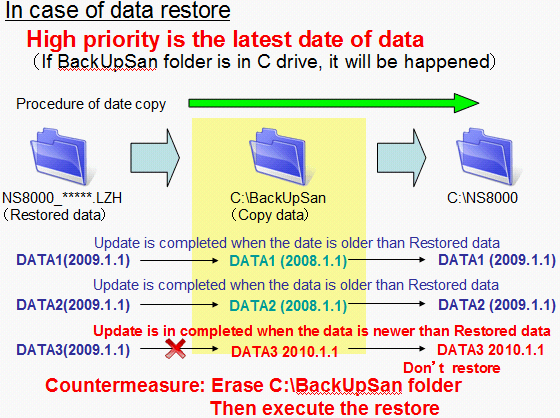
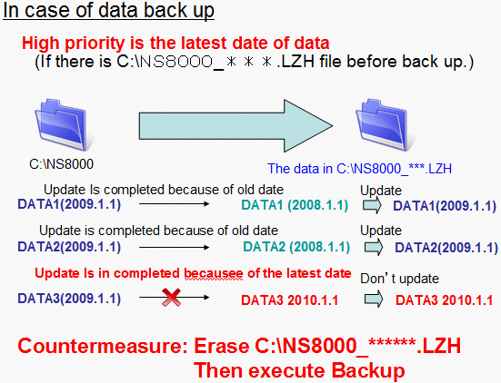

Service History
Subject: What is backup by NS-8000 BackupSan
Handler Model: NS-8000 series
Controller: RC520
Date: 2 Nov 2010
Q&A
What is backup by BackupSan?
Reply you what is data backup when you use “BackupSan” as follows;
1. Parameter: EPSON_FA.dat, DriveBox.dat
2. Config: All of folder and files under NS8000/Config folder
3. SetUp File: All of folder and files under NS8000/Setup folder
Setup.inf (The current selected setup file.)
4. Log File: All of folder and files under NS8000/Log folder
5. Point data of SPEL(POS file, PRM file, Errmsg.log and Sysvar.var)
6. Run :All of folder and files under NS8000/Run folder
Note: They found that it has some of irregular case.
So, we will analyze in detail.
Remarks:
2. Config folder=>Not all files in Config folder are restored(also not sure all files are backup)
4. Log folder, Not all files in Log folder are restored(also not sure all files are backup)
<Conclusion>
If some restored file is older than existing file, The data does not be update.
(Please see attached file.)


<Countermeasure>
Delete the files from folder as follows, before executing BackSan <In case of Restore> All of data files erase \C\BackuSan <In case of BackUp> All of data files erase \C\NS8000_***.LHZ (This is including compile data of BackUpSan made and ZIP file)
It will be happened all of install CD.
Unfortunately we can not improve previous software.
However, we will be improved from Ver3.6 especially BackUpSan .